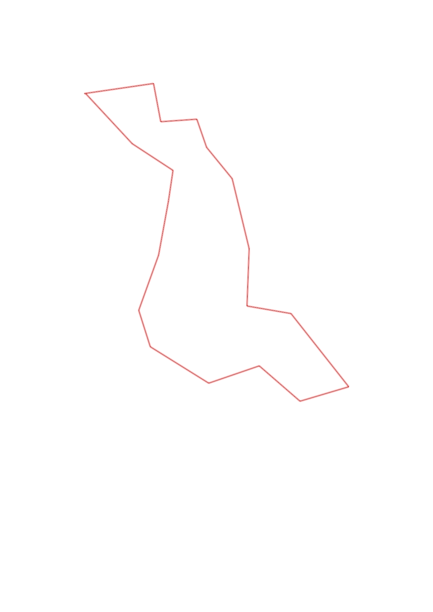
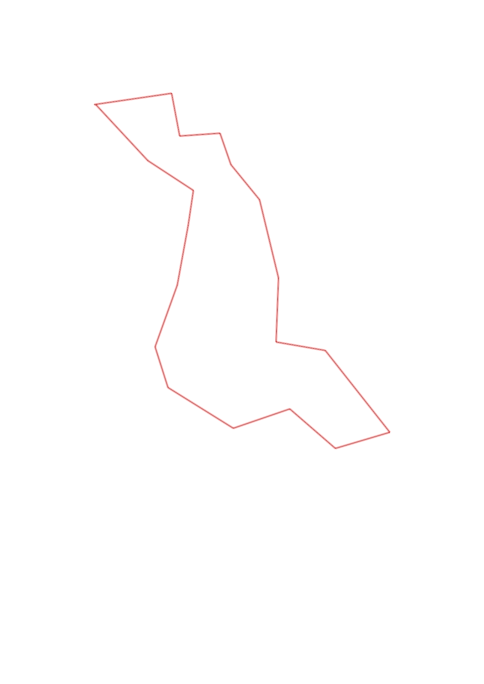

| Control |
Points |
Time Punched |
Distance |
Your Time |
Pace |
Place |
Fastest Time |
Median Time |
% Behind Fastest |
| 33 |
30 |
|
0.49 |
0:02:06 |
04:17 |
1 / 8 |
0:02:06 |
0:03:23 |
0% |
| 32 |
30 |
|
0.27 |
0:02:47 |
10:18 |
1 / 4 |
0:02:47 |
0:03:32 |
0% |
| 57 |
50 |
|
0.25 |
0:02:27 |
09:48 |
1 / 3 |
0:02:27 |
0:02:32 |
0% |
| 52 |
50 |
|
0.21 |
0:06:57 |
33:05 |
6 / 7 |
0:04:11 |
0:04:44 |
66% |
| 63 |
60 |
|
0.28 |
0:02:58 |
10:35 |
1 / 7 |
0:02:58 |
0:03:43 |
0% |
| 104 |
100 |
|
0.5 |
0:05:55 |
11:50 |
1 / 4 |
0:05:55 |
0:14:40 |
0% |
| 55 |
50 |
|
0.4 |
0:05:20 |
13:20 |
1 / 1 |
0:05:20 |
0:05:20 |
0% |
| 85 |
80 |
|
0.31 |
0:02:32 |
08:10 |
1 / 2 |
0:02:32 |
0:03:07 |
0% |
| 84 |
80 |
|
0.65 |
0:05:52 |
09:01 |
1 / 1 |
0:05:52 |
0:05:52 |
0% |
| 54 |
50 |
|
0.35 |
0:03:15 |
09:17 |
1 / 1 |
0:03:15 |
0:03:15 |
0% |
| 82 |
80 |
|
0.37 |
0:02:25 |
06:31 |
1 / 1 |
0:02:25 |
0:02:25 |
0% |
| 61 |
60 |
|
0.37 |
0:03:05 |
08:20 |
1 / 1 |
0:03:05 |
0:03:05 |
0% |
| 92 |
90 |
|
0.48 |
0:04:59 |
10:22 |
2 / 2 |
0:03:32 |
0:04:15 |
41% |
| 31 |
30 |
|
0.26 |
0:01:37 |
06:13 |
1 / 3 |
0:01:37 |
0:01:40 |
0% |
| 75 |
70 |
|
0.41 |
0:02:37 |
06:22 |
1 / 1 |
0:02:37 |
0:02:37 |
0% |
| 43 |
40 |
|
0.38 |
0:02:11 |
05:44 |
1 / 5 |
0:02:11 |
0:02:57 |
0% |
| 95 |
90 |
|
0.22 |
0:01:04 |
04:50 |
1 / 5 |
0:01:04 |
0:05:07 |
0% |
| 42 |
40 |
|
0.34 |
0:02:38 |
07:44 |
1 / 4 |
0:02:38 |
0:03:51 |
0% |
| Finish |
0 |
|
0.47 |
0:02:13 |
04:42 |
1 / 9 |
0:02:13 |
0:03:12 |
0% |
Total Distance Covered: 7.01km
Points Scored: 1080
Late Penalty: -60
Final Score: 1020
Total Time: 1hours 2minutes 58seconds
Efficiency: 145.51 points/km
 
